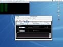
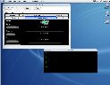

/ Status / |
|
18th February, 2003
The Multimedia Animator continues to progress to completion. I have checked a version that works for only the Terminal Manager and Terminal Manager Animator. The rest should be straight forward.
9th November, 2002
I've just started changing some stuff again. The IPC Manager needed some
serious work to get it up to scratch. The only things left to do on the
conversion is the Help and Multimedia playback/recording. Here's another
screenshot of the IPC Manager running the shared memory program.

4th September, 2002
I'm nearly finished the conversion of the existing functionality of RCOSjava
to Swing. I've done a quick screen shot in OS X to show what it's like.

17th July, 2002
I've started work on the last major release before I intend to stop development here and go into maintenance/support mode. There will also be further documentation produced including finishing the paper on the messagin system.
I plan to release version 0.5 with a Swing UI, finished C compiler and fully functional recording and playback. All currently known bugs will also be fixed.26th May, 2002
I've fixed the problems with examples 3 and 4. I've added while loops and fixed a problem with for loop compilation. Shared memory now actually creates memory using the memory manager rather than an internal, hidden object. I spent sometime making sure the distributions were correct and as small as possible.
28th April, 2002
It's here at last. I've called it RCOSjava 0.4 as I figure there's at least 6 version to go. The compiler compiles the current source code with exception to the ones using arrays (3 and 4). Arrays were like the second thing I got going so I'll have to track that down now next. The IPC Animator is now complete although I will probably modify how the shared memory stuff is displayed. I plan to try and get two more released by the start of July.
14th April, 2002
I have checked into CVS the latest compiler which successfully compiles all the example .c files. The .c files includes examples for if-then, semaphores and other simple stuff. I will finish off shared memory, get the IPC animator done, some clean-up and then do a release.
11th January, 2002
This is just a quick update to make it known that development has been proceeding in fits and starts with a recent 3-4 days of solid development on the compiler taking place. I'm currently pretty busy but the compiler and a new release of RCOSjava should happen soon.
15th August, 2001
Alpha 3-2 is Alpha 3 with the instructions updated and the fix applied for the threading issues (which means it's more stable and faster).
3rd July, 2001
Alpha 3-1 is Alpha 3 with improved instructions, Soma web server and fixes to the shell scripts for Unix so they don't have line feeds.
13th June, 2001
I decided to release the current state of the code as Alpha 3. This means that most of the bugs found in Alpha 2 are now fixed. However, I didn't get a chance to finish the compiler. So that will be in Alpha 4 along with shared memory. It means that there will be an Alpha 5 with the disk stuff in it and the help system. You can download Alpha 3 from here.
3rd June, 2001
After many weeks of not having a chance to do any development, I'm finally back into it. The features listed below should be available by June 11th. Note: It will be a C compiler not a C/C++ compiler.
26th April, 2001
The second alpha is out now. Many bugs causing stability issues have been resolved. The IPC Manager is now enabled and debugged. Shared memory has been delayed until some demonstration code is available. The "Step" and "Kill" functionality in the Process Manager now functions correctly. The next alpha is planned for two to three weeks and will include: changing process priority, C/C++ compiler, shared memory, documentation and help system.
15th April, 2001
The first alpha release is now available. This includes the Ant build script, scheduler with FIFO, LIFO and Priority queuing, the recording/playback and better documentation. Bugs that have been discovered are in the bug tracking system. Fixes to these bugs and a properly working IPC Manager will be in the next release, hopefully a week or so away. Any feedback would be appreciated.
2nd March, 2001RCOSjava has undergone more development recently. A concerted effort to finish development is being made. Currently, the system is semi-functional although some major work (mainly reintegration of broken code) is still needed. The recording is also in place. However, it is significantly slow and still a little buggy. The UI is yet to be complete. There is also a basic Ant build script in place. The JUnit tests are yet to be integrated. All Java (with the exception of KOML) is now JDK 1.3 compliant.
{kind=link}
{kind=link}